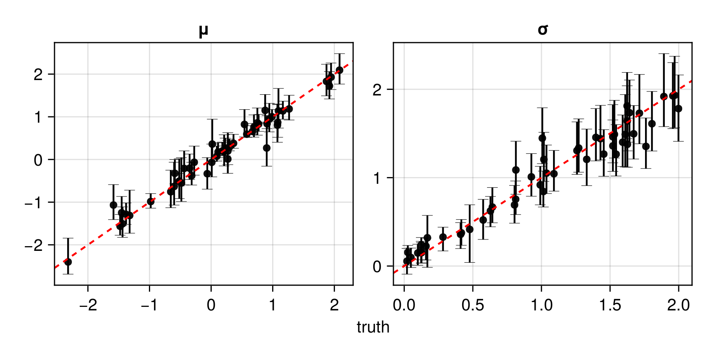
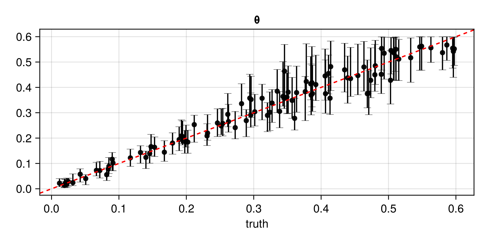
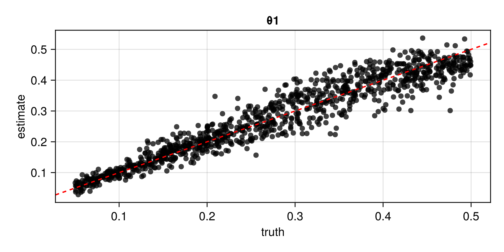

Examples
For a very simple example that can be "copy-paste", see Quick start on the index page.
Before proceeding to the main examples, we first load the required packages, the following of which are used throughout these examples:
using NeuralEstimators
using Flux # Julia's deep-learning library
using Distributions: InverseGamma, Uniform # sampling from probability distributions
using AlgebraOfGraphics, CairoMakie # visualisationThe following packages will be used in the examples with Gridded data and Irregular spatial data:
using Distances # distance matrices
using Folds # parallel simulation (start Julia with --threads=auto)
using LinearAlgebra # Cholesky factorisationThe following packages are used only in the example with Irregular spatial data:
using GraphNeuralNetworks # GNN architecture
using Statistics: mean Finally, various GPU backends can be used (see the Flux documentation for details). For instance, to use an NVIDIA GPU in the following examples, simply load CUDA.jl:
using CUDAOnce a GPU package is loaded and a compatible GPU is available, the functions in NeuralEstimators will automatically leverage it to improve computational efficiency while ensuring memory safety via batched operations (GPU usage can be disabled by setting use_gpu = false).
Univariate data
Here, we develop a neural Bayes estimator for $\boldsymbol{\theta} \equiv (\mu, \sigma)'$ from data $\boldsymbol{Z} \equiv (Z_1, \dots, Z_m)'$, where each $Z_i \overset{\mathrm{iid}}\sim N(\mu, \sigma^2)$. See Estimators for a list of other classes of estimators available in the package.
We begin by defining a function to sample parameters from the prior distribution. Assuming prior independence, we adopt the marginal priors $\mu \sim N(0, 1)$ and $\sigma \sim IG(3, 1)$:
function sample(K)
μ = randn(K)
σ = rand(InverseGamma(3, 1), K)
θ = vcat(μ', σ')
return θ
endNext, we define the statistical model implicitly through data simulation. Since our data are replicated, the simulated data are stored as a Vector{A}, where each element corresponds to one parameter vector. The type A reflects the multivariate structure of the data. In this example, each replicate $Z_1, \dots, Z_m$ is univariate, so A is a Matrix with $n = 1$ row and $m$ columns:
function simulate(θ, m)
[ϑ[1] .+ ϑ[2] .* randn(1, m) for ϑ in eachcol(θ)]
endWe now design our neural network.
As we are constructing a neural Bayes estimator, the neural network is a mapping $\mathcal{Z}\to\Theta$, and the dimensionality of the neural-network output is therefore $d \equiv \textrm{dim}(\Theta) = 2$.
Since our data are replicated, we adopt the DeepSets framework, implemented via the type DeepSet. DeepSets consist of two neural networks: an inner network and an outer network. The inner network extracts summary statistics from the data, and its architecture depends on the multivariate structure of the data. For unstructured data (i.e., data without spatial or temporal correlation within each replicate), we use a multilayer perceptron (MLP). The input dimension matches the dimensionality of each data replicate, while the output dimension corresponds to the number of summary statistics appropriate for the model (a common choice is $d$). The outer network maps the learned summary statistics to the output space (here, the parameter space, $\Theta$). The outer network is always an MLP.
Below is an example of a DeepSets architecture for neural Bayes estimation in this example. Note that many models have parameter constraints (e.g., variance and range parameters that must be strictly positive). These constraints can be incorporated in the final layer of the neural network by choosing appropriate activation functions for each parameter. Here, we enforce the constraint $\sigma > 0$ by applying the softplus activation function in the final layer of the outer network, ensuring that all parameter estimates are valid. For some additional ways to constrain parameter estimates, see Output layers.
n = 1 # dimension of each data replicate (univariate)
d = 2 # dimension of the parameter vector θ
w = 128 # width of each hidden layer
# Final layer has output dimension d and enforces parameter constraints
final_layer = Parallel(
vcat,
Dense(w, 1, identity), # μ ∈ ℝ
Dense(w, 1, softplus) # σ > 0
)
# Inner and outer networks
ψ = Chain(Dense(n, w, relu), Dense(w, d, relu))
ϕ = Chain(Dense(d, w, relu), final_layer)
# Combine into a DeepSet
network = DeepSet(ψ, ϕ)We then initialise the neural Bayes estimator by wrapping the neural network in a PointEstimator:
estimator = PointEstimator(network)Next, we train the estimator using train(), here using the default mean-absolute-error loss, so that the resulting neural Bayes estimator approximates the marginal posterior medians. We'll train the estimator using $m=50$ independent replicates per parameter configuration. Below, we pass our user-defined functions for sampling parameters and simulating data, but one may also pass parameter or data instances, which will be held fixed during training:
m = 50
estimator = train(estimator, sample, simulate, m = m)One may wish to save a trained estimator and load it in a later session: see Saving and loading neural estimators for details on how this can be done.
The function assess() can be used to assess the trained estimator. Parametric and non-parametric bootstrap estimates can be obtained via bootstrap(), with corresponding confidence intervals computed using interval(). Additionally, non-parametric bootstrap-based uncertainty quantification can be included in the assessment stage through the keyword argument probs:
θ_test = sample(1000)
Z_test = simulate(θ_test, m)
assessment = assess(estimator, θ_test, Z_test, probs = [0.025, 0.975])The resulting Assessment object contains the sampled parameters, the corresponding point estimates, and the corresponding lower and upper bounds of the bootstrap intervals. This object can be used to compute various diagnostics and to visualise the neural point estimates and bootstrap intervals vs the true parameter value:
bias(assessment) # μ = 0.002, σ = 0.017
rmse(assessment) # μ = 0.086, σ = 0.078
risk(assessment) # μ = 0.055, σ = 0.056
plot(assessment)
As an alternative form of uncertainty quantification with neural Bayes estimators, one may approximate a set of marginal posterior quantiles by training a neural Bayes estimator under the quantile loss function, which allows one to generate approximate marginal posterior credible intervals. This is facilitated with IntervalEstimator which, by default, targets 95% central credible intervals:
q̂ = IntervalEstimator(network)
q̂ = train(q̂, sample, simulate, m = m)The resulting posterior credible-interval estimator can also be assessed using assess(). Often, these intervals have better coverage than bootstrap-based intervals.
Once an estimator is deemed to be well calibrated, it may be applied to observed data (below, we use simulated data as a substitute for observed data):
θ = sample(1) # true parameters
Z = simulate(θ, m) # "observed" data
estimate(estimator, Z) # point estimate
interval(bootstrap(estimator, Z)) # 95% non-parametric bootstrap intervals
interval(q̂, Z) # 95% marginal posterior credible intervalsGridded data
For data collected over a regular grid, neural estimators are typically based on a convolutional neural network (CNN; see, e.g., Dumoulin and Visin, 2016).
When using CNNs with NeuralEstimators, each data set must be stored as a multi-dimensional array. The penultimate dimension stores the so-called "channels" (this dimension is singleton for univariate processes, two for bivariate processes), while the final dimension stores independent replicates. For example, to store $50$ independent replicates of a bivariate spatial process measured over a $10\times15$ grid, one would construct an array of dimension $10\times15\times2\times50$.
For illustration, here we develop a neural Bayes estimator for the (univariate) spatial Gaussian process model with exponential covariance function and unknown range parameter $\theta > 0$. The spatial domain is taken to be the unit square, we simulate data on a regular square grid of size $n = 16^2 = 256$, and we adopt the prior $\theta \sim U(0, 0.5)$.
Simulation from Gaussian processes typically involves the computation of an expensive intermediate object, namely, the Cholesky factor of a covariance matrix. Storing intermediate objects can enable the fast simulation of new data sets when the parameters are held fixed. Hence, in this example, we define a custom type Parameters subtyping ParameterConfigurations for storing the matrix of parameters and the corresponding Cholesky factors:
struct Parameters{T} <: ParameterConfigurations
θ::Matrix{T}
L
endFurther, we define two constructors for our custom type: one that accepts an integer $K$, and another that accepts a $d\times K$ matrix of parameters. The former constructor will be useful during the training stage for sampling from the prior distribution, while the latter constructor will be useful for parametric bootstrap (since this involves repeated simulation from the fitted model):
function sample(K::Integer)
# Sample parameters from the prior
θ = 0.5 * rand(1, K)
# Pass to matrix constructor
Parameters(θ)
end
function Parameters(θ::Matrix)
# Spatial locations, a 16x16 grid over the unit square
pts = range(0, 1, length = 16)
S = expandgrid(pts, pts)
# Distance matrix, covariance matrices, and Cholesky factors
D = pairwise(Euclidean(), S, dims = 1)
K = size(θ, 2)
L = Folds.map(1:K) do k
Σ = exp.(-D ./ θ[k])
cholesky(Symmetric(Σ)).L
end
Parameters(θ, L)
endNext, we define the model simulator, which returns simulated data as a four-dimensional array (see Simulating data for an overview of common data formats):
function simulate(parameters::Parameters, m = 1)
Z = Folds.map(parameters.L) do L
n = size(L, 1)
z = L * randn(n, m)
z = reshape(z, 16, 16, 1, m)
z
end
Z
endA possible neural-network architecture is as follows. Note that deeper architectures that employ residual connections (see ResidualBlock) often lead to improved performance, and certain pooling layers (e.g., GlobalMeanPool) allow the neural network to accommodate grids of varying dimension; for further discussion and an illustration, see Sainsbury-Dale et al. (2025, Sec. S3, S4).
# Inner network
ψ = Chain(
Conv((3, 3), 1 => 32, relu), # 3x3 convolutional filter, 1 input channel to 32 output channels
MaxPool((2, 2)), # 2x2 max pooling for dimension reduction
Conv((3, 3), 32 => 64, relu), # 3x3 convolutional filter, 32 input channels to 64 output channels
MaxPool((2, 2)), # 2x2 max pooling for dimension reduction
Flux.flatten # flatten output to feed into a fully connected layer
)
# Outer network
ϕ = Chain(Dense(256, 64, relu), Dense(64, 1))
# DeepSet object
network = DeepSet(ψ, ϕ)Above, we embedded our CNN within the DeepSets framework to accommodate scenarios involving replicated spatial data (e.g., when fitting models for spatial extremes). However, the package allows users to define the neural network using any Flux model. Since this example does not include independent replicates, one could instead store each simulated data set in the final dimension of a four-dimensional array, and then use a generic CNN architecture.
Next, we initialise a point estimator and a posterior credible-interval estimator:
θ̂ = PointEstimator(network)
q̂ = IntervalEstimator(network)Now we train the estimators, here using fixed parameter instances to avoid repeated Cholesky factorisations (see Storing expensive intermediate objects for data simulation and On-the-fly and just-in-time simulation for further discussion):
K = 10000 # number of training parameter vectors
θ_train = sample(K)
θ_val = sample(K ÷ 10)
θ̂ = train(θ̂, θ_train, θ_val, simulate)
q̂ = train(q̂, θ_train, θ_val, simulate)Once the estimators have been trained, we assess them using empirical simulation-based methods:
θ_test = sample(1000)
Z_test = simulate(θ_test)
assessment = assess([θ̂, q̂], θ_test, Z_test)
bias(assessment) # 0.005
rmse(assessment) # 0.032
coverage(assessment) # 0.953
plot(assessment) 
Finally, we can apply our estimators to observed data:
θ = Parameters(Matrix([0.1]')) # true parameter
Z = simulate(θ) # "observed" data
estimate(θ̂, Z) # point estimate: 0.11
interval(q̂, Z) # 95% marginal posterior credible interval: [0.08, 0.16]Note that missing data (e.g., due to cloud cover) can be accommodated using the missing-data methods implemented in the package.
Irregular spatial data
To cater for spatial data collected over arbitrary spatial locations, one may construct a neural estimator with a graph neural network (GNN; see Sainsbury-Dale, Zammit-Mangion, Richards, and Huser, 2025). The overall workflow remains as given in previous examples, with two key additional considerations.
First, if inference is to be made from a single spatial data set collected before constructing estimator, training data can be simulated using the observed spatial locations, which can be treated as fixed and known. However, if the estimator is intended for application to multiple spatial data sets with varying spatial configurations, it should be trained on a diverse set of spatial configurations. These configurations can be sampled during training, possibly using a spatial point process such as maternclusterprocess().
Second, the spatial data should be stored as a graph, which can be achieved using spatialgraph().
For illustration, we again consider a spatial Gaussian process model with exponential covariance function, and we define a type for storing expensive intermediate objects needed for data simulation. In this example, these objects include Cholesky factors, and spatial graphs which store the adjacency matrices needed to perform graph convolutions:
struct Parameters <: ParameterConfigurations
θ::Matrix # true parameters
L # Cholesky factors
g # spatial graphs
S # spatial locations
endAgain, we define two constructors, which will be convenient for sampling parameters from the prior during training and assessment, and for parametric bootstrap sampling when making inferences from observed data:
function sample(K::Integer)
# Sample parameters from the prior
θ = 0.5 * rand(1, K)
# Sample spatial configurations from Matern cluster process on [0, 1]²
n = rand(200:300, K)
λ = rand(Uniform(10, 50), K)
S = [maternclusterprocess(λ = λ[k], μ = n[k]/λ[k]) for k ∈ 1:K]
# Pass to constructor
Parameters(θ, S)
end
function Parameters(θ::Matrix, S)
# Compute covariance matrices and Cholesky factors
L = Folds.map(axes(θ, 2)) do k
D = pairwise(Euclidean(), S[k], dims = 1)
Σ = Symmetric(exp.(-D ./ θ[k]))
cholesky(Σ).L
end
# Construct spatial graphs
g = spatialgraph.(S)
# Store in Parameters object
Parameters(θ, L, g, S)
endNext, we define a function for simulating from the model given an object of type Parameters. The code below enables simulation of an arbitrary number of independent replicates m, and one may provide a single integer for m, or any object that can be sampled using rand(m, K) (e.g., an integer range or some distribution over the possible sample sizes):
function simulate(parameters::Parameters, m)
K = size(parameters, 2)
m = rand(m, K)
map(1:K) do k
L = parameters.L[k]
g = parameters.g[k]
n = size(L, 1)
Z = L * randn(n, m[k])
spatialgraph(g, Z)
end
end
simulate(parameters::Parameters, m::Integer = 1) = simulate(parameters, range(m, m))Next, we construct our GNN architecture. Here, we use an architecture tailored to isotropic spatial dependence models; for further details, see Sainsbury-Dale et al. (2025, Sec. 2.2). We also employ a sparse approximation of the empirical variogram as an expert summary statistic (Gerber and Nychka, 2021).
In this example our goal is to construct a point estimator, however any other kind of estimator (see Estimators) can be constructed by simply substituting the appropriate estimator class in the final line below:
# Spatial weight functions: continuous surrogates for 0-1 basis functions
h_max = 0.15 # maximum distance to consider
q = 10 # output dimension of the spatial weights
w = KernelWeights(h_max, q)
# Propagation module
propagation = GNNChain(
SpatialGraphConv(1 => q, relu, w = w, w_out = q),
SpatialGraphConv(q => q, relu, w = w, w_out = q)
)
# Readout module
readout = GlobalPool(mean)
# Inner network
ψ = GNNSummary(propagation, readout)
# Expert summary statistics, the empirical variogram
S = NeighbourhoodVariogram(h_max, q)
# Outer network
ϕ = Chain(
Dense(2q => 128, relu),
Dense(128 => 128, relu),
Dense(128 => 1, identity)
)
# DeepSet object
network = DeepSet(ψ, ϕ; S = S)
# Point estimator
estimator = PointEstimator(network)Next, we train the estimator.
m = 1
K = 5000
θ_train = sample(K)
θ_val = sample(K÷5)
estimator = train(estimator, θ_train, θ_val, simulate, m = m, epochs = 10)Note that the computations in GNNs are performed in parallel, making them particularly well-suited for GPUs, which typically contain thousands of cores. If you have access to an NVIDIA GPU, you can utilise it by simply loading the Julia package CUDA.
Next, we assess our trained estimator:
θ_test = sample(1000)
Z_test = simulate(θ_test, m)
assessment = assess(estimator, θ_test, Z_test)
bias(assessment)
rmse(assessment)
risk(assessment)
plot(assessment) 
Finally, once the estimator has been assessed, it may be applied to observed data, with bootstrap-based uncertainty quantification facilitated by bootstrap() and interval(). Note that, since the estimator was trained using spatial configurations in the unit square $[0, 1] \times [0, 1]$, the spatial coordinates of observed data should be scaled by a common factor such that they are also contained within this unit square; estimates of any range parameters are then scaled back accordingly. Below, we use simulated data as a substitute for observed data:
parameters = sample(1) # sample a parameter vector and spatial locations
θ = parameters.θ # true parameters
S = parameters.S # "observed" locations
Z = simulate(parameters) # "observed" data
θ̂ = estimate(estimator, Z) # point estimate
ps = Parameters(θ̂, S) # construct Parameters object from point estimate
bs = bootstrap(estimator, ps, simulate, m) # parametric bootstrap estimates
interval(bs) # parametric bootstrap confidence interval